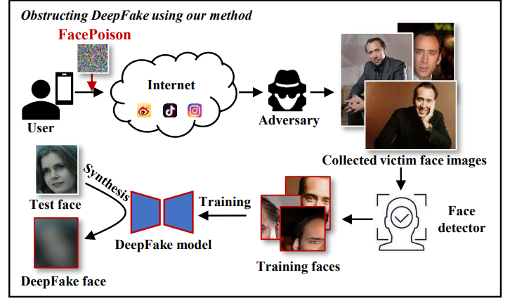

Face Poison: Obstructing DeepFakes by Disrupting Face Detection
简介：由于训练深度伪造模型需要大量的人脸数据， 现有框架通常利用人脸检测器来自动提取图像中的人脸区域。因此本文提出了一种基于扰乱人脸检测的主动性深度伪造防御方法。 具体而言，该方法设计了一种针对人脸检测模型的对抗样本，该样本不易被察觉且能够扰乱多种主流人脸检测模型，从而影响正确人脸区域的提取，污染深度伪造模型的训练数据。 本文在多个人脸检测器以及多个深度伪造模型上进行了防御性实验，结果表明所提方法初步验证了通过扰乱人脸检测进行深度伪造防御的可行性。

作者: Yuezun Li, Jiaran Zhou, Siwei Lyu.
会议名称: IEEE International Conference on Multimedia and Expo (ICME). CCF B.
© AI Security Group (AISec) @ OUC